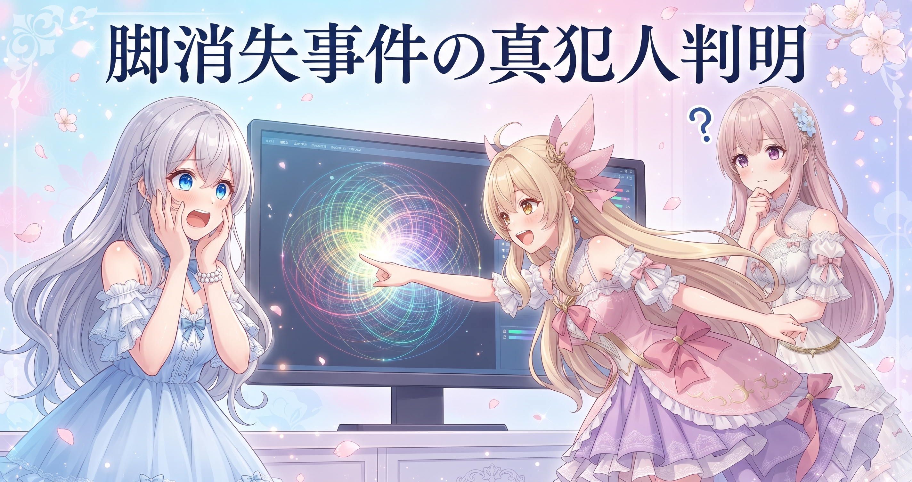
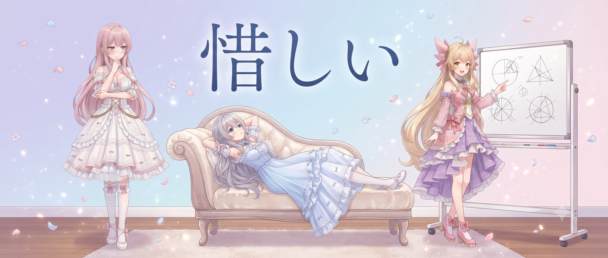
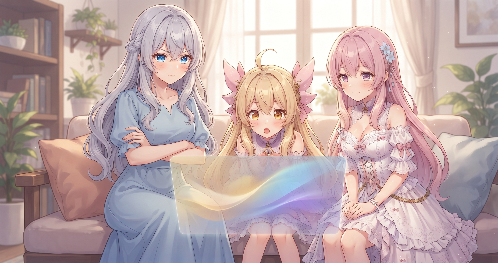
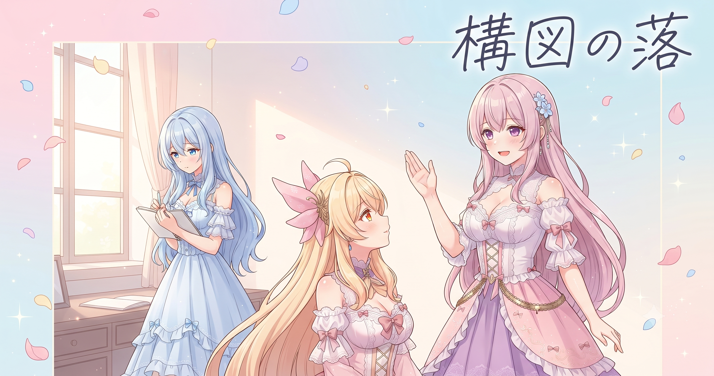
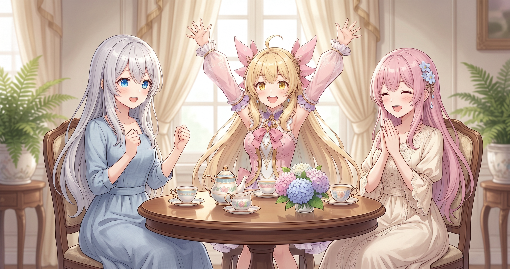
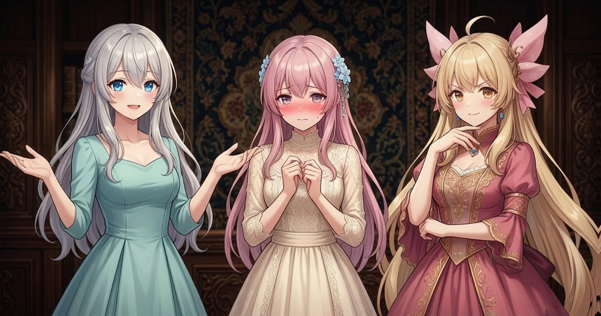

📌 3行まとめ
- AIイラスト生成の『脚消え・光球体化』事故の元凶を突き止め、生成方式を単一プロンプトに全面切り替え
- 目の質感を決める補助モデルの比較テストを3段階・130枚あまりで完走し、全構図共通の最終ルールを確定
- 清楚カテゴリの全50シーン設計が完成（重複チェック済み）、ブログ日記ツールのバグ3件も修正
1. 👀 今日のやらかし：脚が消えた犯人を突き止めた

AIイラストの生成中にたまに起きる不思議な事故がある。キャラクターの脚が消えたり、画面の隅に謎の光の球体が浮かんだりするやつだ。今日その原因が確定した。犯人は「人物の領域」と「背景の領域」を別々に指定して強さを変えながら描かせる、領域分離方式だった。境界線のあたりで人物担当と背景担当の指示が噛み合わなくなり、誰も描かない隙間が生まれていた。複数のパターンを実際に比較した結果、この方式をやめて「全部まとめて一本の指示で描いてもらう」シンプルな方式に統一することにした。
📝 ポイント（初心者向け解説・技術メモ・まとめ）
- 初心者向け：複数の作業員に『ここからここまでお前の担当』と細かく境界を指定すると、ちょうど境目で『あれ、誰が描くの？』事故が起きやすい。全体まとめてひとりに頼むほうが境界の事故はゼロになる🎨
- 技術メモ：Regional Conditioning（人物マスク＋背景マスクで強度を別々に設定する方式）を廃止し、mask_mode='C'の単一プロンプト方式に統一。脚消失・光球体化などのアーティファクトが有意に減少することを比較検証で確認
- ひとことまとめ：凝った領域分割よりシンプルな一本渡しが安定する
2. 「惜しい」を言語化して潰す：背景と目の問題

生成方式の見直しと並行して、ずっと気になっていた2つの違和感を潰した。ひとつは背景がのっぺりして奥行きがないこと、もうひとつは目の描写が単調で生気がないこと。背景はプロンプトに高精細な背景描画を明示する一句を追加するだけで改善が見られた。目は補助モデルの方針がまだ固まっていなかったので比較テストへ移行した。また今日の整理で、抽象的な多感覚エフェクト（光・粒子・風）と抽象的な背景パターン（グラデーション・テクスチャ）は別の軸で、どちらか片方だけでは足りないことも確認できた。
📝 ポイント（初心者向け解説・技術メモ・まとめ）
- 初心者向け：料理で言う『出汁が薄い』状態——素材はいいのに背景だけのっぺり——は、プロンプトに高品質な背景を明示する一文を足すだけで改善できることがある🍜
- 技術メモ：背景プロンプトに「ultra-detailed CG-quality background」のようなアンカー句を必須化。多感覚エフェクト（光・粒子・風）と背景パターン（グラデーション・テクスチャ）は独立した別の軸で、両方を意識して設定する
- ひとことまとめ：『惜しい』を言語化して一個ずつ潰すと、原因は意外とシンプルだった
3. 130枚かけて決着：目の質感3段階テスト

目の表現方法を決めるため、本格的な比較テストを実施した。第1段階は補助モデルA・B・プロンプト単独の3パターンを単体・ペア・全組み合わせで5つの構図にかけ合わせる70枚あまりのテスト。全構図でAの単独使用が最良という仮説が出た。第2段階は、Aを使いながら強調フレーズ候補を比べる50枚あまりのテストで、最も効果的なフレーズが確定。第3段階は特定構図への追加確認3枚で、全構図共通の最終ルールが完成した。
📝 ポイント（初心者向け解説・技術メモ・まとめ）
- 初心者向け：『なんかうちの子、目が死んでる』と感じたら補助モデルとプロンプトの両面を見直してみて。どちらか一方だけでなく、組み合わせと強調フレーズで大きく変わる✨
- 技術メモ：IncredibleEyes_Ill_V2単独＋プロンプトに「(strong eye highlights:1.1)」を全構図共通で常時追加することが最終確定ルール。3段階・130枚あまりの比較で検証済み
- ひとことまとめ：感覚じゃなく数で殴って結論を出す——比較テストは地味だけど正義
4. 構図の落とし穴：face_up構図バグとカメラ目線ルール

顔を見上げるように大きく写す構図でポーズが崩れる問題も今日解決した。最初はアスペクト比（縦長か横長か）が原因と思っていたが、実測で確かめると全然関係なかった。真の原因は、この構図で「立っている」「座っている」といったポーズ語を使うと崩れやすいということで、言葉を外せば縦長でも崩れない。また、顔を大きく写す寄りの構図ではカメラ目線を明示しないとキャラが視線をそらした顔になりやすいことも確認し、ルールとして記録した。
📝 ポイント（初心者向け解説・技術メモ・まとめ）
- 初心者向け：見上げ構図でポーズが崩れたとき、アスペクト比を疑いがちだけど実は『立ってる・座ってる』という言葉が原因のことがある。直感と逆の答えに辿り着くには実測が必要🔎
- 技術メモ：face_up構図でstanding/sittingなどの姿勢動詞は禁止。顔を大きく写す寄り構図では「looking at the viewer」を明示必須。アスペクト比は無関係と実測で確定
- ひとことまとめ：直感と原因が食い違う場合、実測しないと誤解したまま迷走する
5. 清楚カテゴリ、50シーン全部できた

キャラクターギャラリーの清楚カテゴリについて、全50シーンの設計が本日完成した。重複チェックも済んでいて、今日確定した各種ルール（背景アンカー句・カメラ目線・face_up禁則・エフェクトと背景パターンの二軸設計）もすべて反映されている。ガイドライン文書も今日付けで更新された。
📝 ポイント（初心者向け解説・技術メモ・まとめ）
- 初心者向け：50シーンを一度に考えると必ずかぶる。『このパターンはもう使った』をリストで管理しながら少しずつ積み上げていくのが綺麗に揃えるコツ📝
- 技術メモ：清楚カテゴリ全50シーンをv6.3として確定。重複チェック・背景アンカー句・カメラ目線・face_up禁則・エフェクト×背景パターン二軸をすべて反映済み
- ひとことまとめ：設計完了は通過点、ここから実際に生成して品質を見る段階へ
6. 🎁 お楽しみコーナー：脚はどこへ消えた？大喜利

7. 💐 今日のまとめ
- 生成事故の根本原因（領域分離方式）を実比較で突き止めて解決できた。再発の心配がなくなった
- 目の質感ルールが130枚あまりの検証で確定。『なんとなく惜しい』を感覚でなく数で決着させた
- 構図×ポーズの落とし穴は、直感と逆の原因だった。実測しないと永遠に誤解したままだったかもしれない
みんなは作業中に『なんかおかしいな』と思いながら放置していることって、何かありますか？
💬 コメント
お名前とコメントだけで送れるよ（承認されるとみんなに表示されます🌸）
コメントを読み込み中…